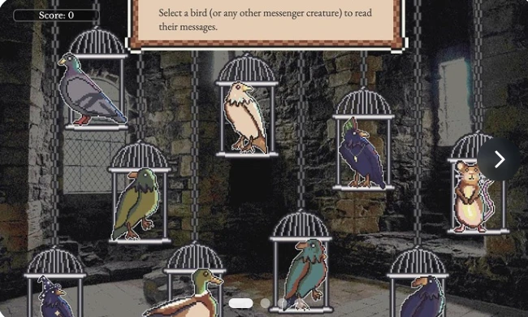

Phishing awareness game
Sir Hackalot: Royal Ravens Game
A fantasy-themed game in which messenger birds bring messages that players must classify as legitimate, spam or phishing.

Messenger birds and message-review gameplay preview.


Select a thumbnail to explore the images.
What I built
I contributed to idea generation, game development and the visual direction. The player acts as Senior Post Warden of Cloudwaria, reviewing messages before allowing them into the castle.
How it works
The game combines humour, a medieval setting and a retro visual style. A randomized selection of messages and messenger birds supports a short experience that can be replayed with different examples.
Delivery
The catalogue lists a five-minute game. Its update date is April 2026; this does not establish its original production date.
View LinkedIn ↗